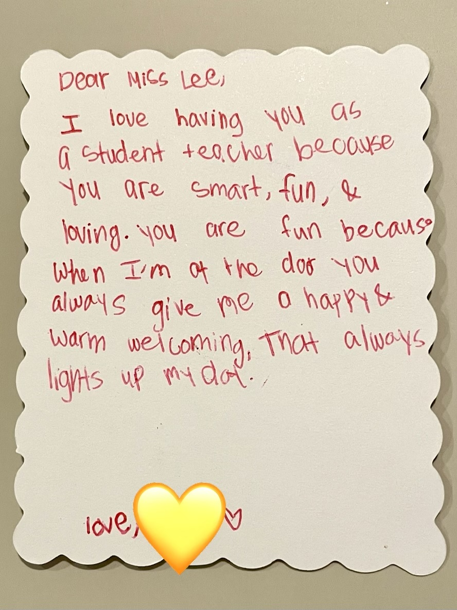
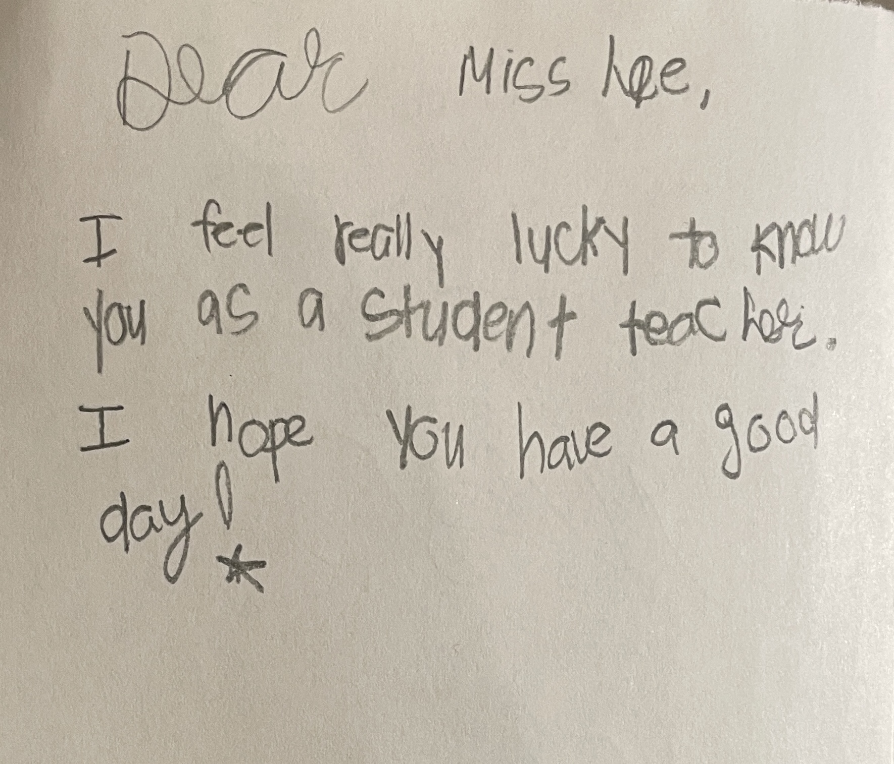
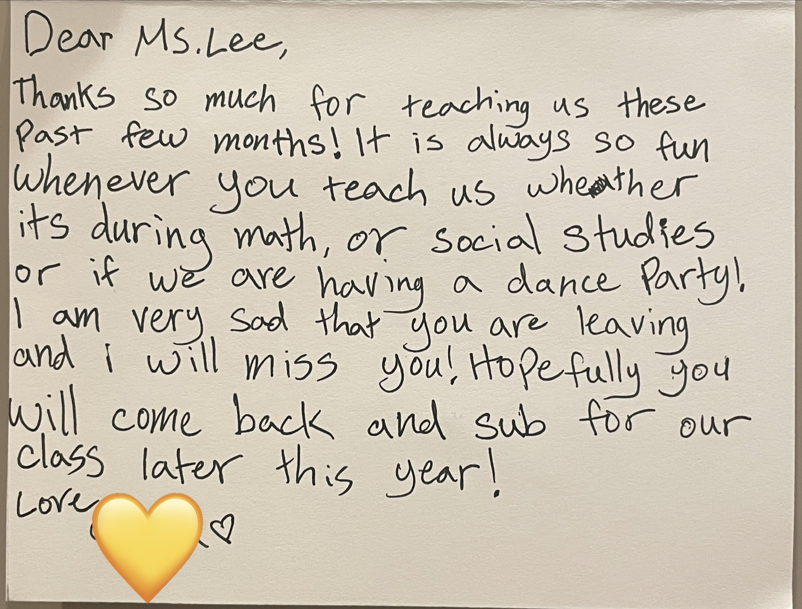
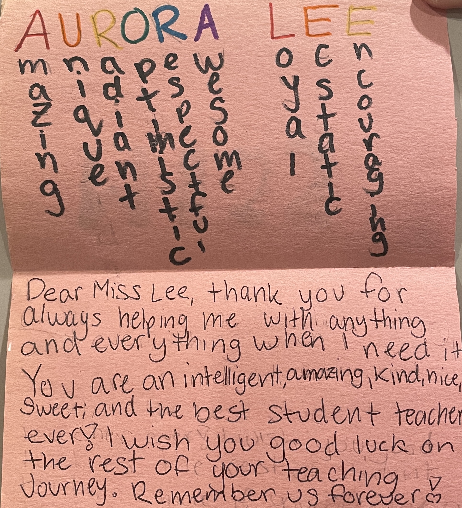
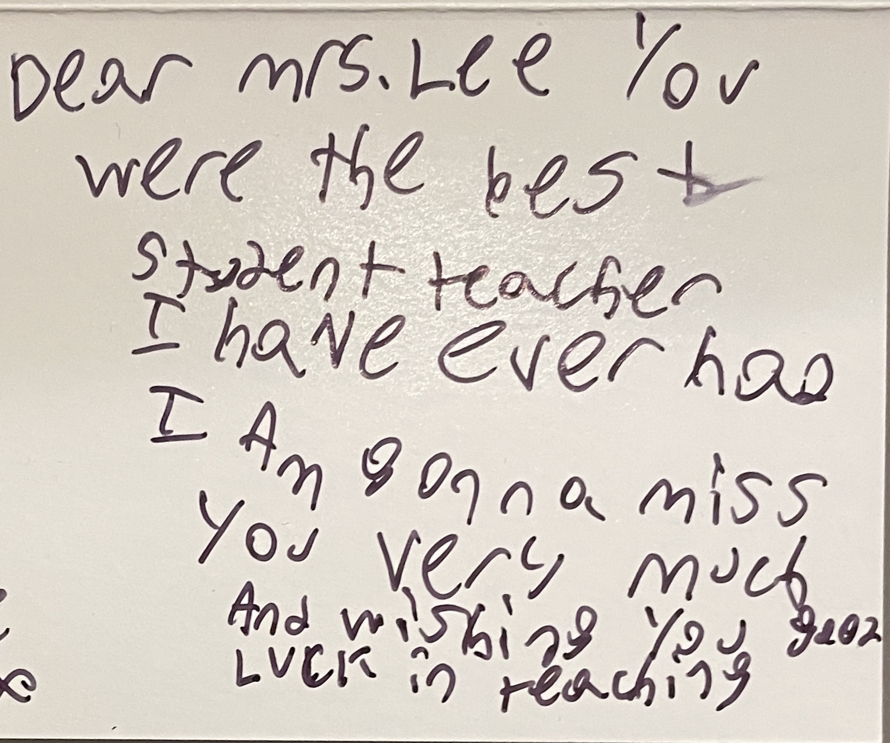

Aurora understands how to break down complex concepts in ways that stem curiosity, encourage sense making, and deepen understanding. She has a remarkable ability to read her students and situate their learning within their ZPD.
Dr. Evelyn Young
Multiple Subject Coordinator | UCI MAT + Credential Program
She exhibits an exceptional depth in her content area knowledge especially in Math and Science. This translates into passion, rigor, and depth in student learning.
Grace Lee-Chang
Student Teacher Supervisor | UCI MAT + Credential Program
Aurora Lee possesses the rare combination of strong instructional skill, genuine care for students, and an outstanding work ethic. She is a natural teacher who builds meaningful relationships, reflects thoughtfully on her practice, and continually strives for excellence.
Lisa Holman
6th Grade Mentor Teacher | Davis Magnet Elementary
Aurora excels at creating an inclusive classroom environment where students feel comfortable taking risks, offering opinions, and sharing alternative perspectives.
Jackie Christy
Student Teacher Supervisor | UCI MAT + Credential Program




